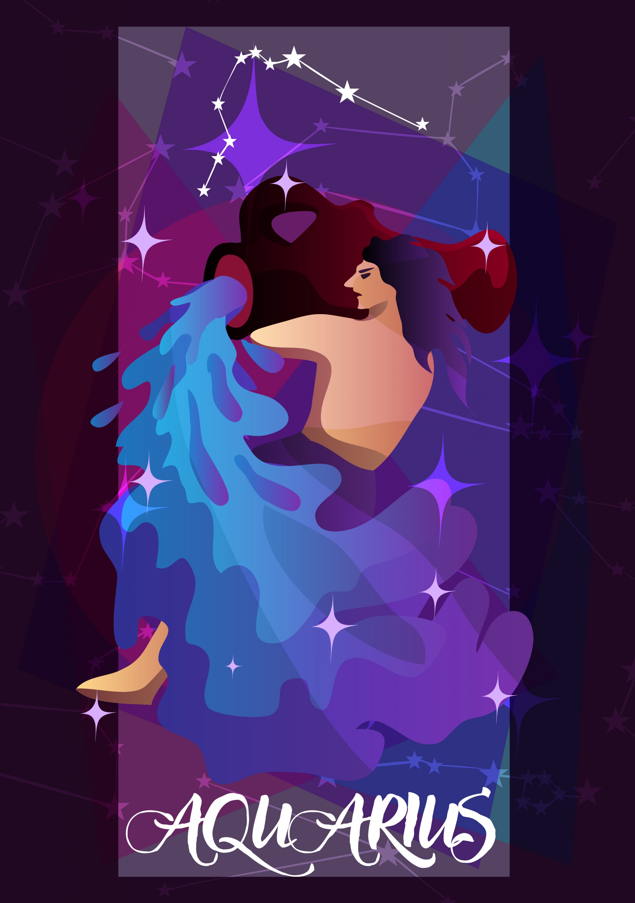

Water Bearer | JAN 20 - FEB 18
Imaginative, Idealistic, Intuitive
| Element: Air | Polarity : Positive |
| Quality : Fixed | Ruling Planet: Uranus |
| Spirit Color : Sky blue | Lucky Gem : Amethyst |
| Flower : Orchid | Top Love Matches : Sagittarius |
| Ruling House : Eleventh |
Independent and enigmatical, Aquarians are unique. There is no one quite like an Aquarius, and because each is so incredibly individual, it can be tough to describe them as a group. Aquarians don't like labels, and may shy away from any adjective—even the good ones you might bestow upon them. Aquarians believe in the nature of change and evolution, and even though they're a fixed sign, they may not necessarily believe they are the "same" people they were when they were born.
Aquarians have a strong sense of social justice and making the world a better place, and see themselves as just one link in an endless human chain. They are very concerned about others, not because of how others treat them or how they want others to treat them.
"There is no me, there is only we."
Aquarius is intellectual and analytical, but don't mistake these attributes for aloofness. Aquarians have deep passion, but they know jumping into something too quickly can cause more harm than good. Aquarians are often big-picture thinkers who can see connections in a way that eludes others. Aquarians have energy, warmth, and a deep desire to get things done. They feel they're on the planet to change the world and they will do so. Aquarians are idealistic, and will never accept "good enough" until they truly believe it's good enough.
Aquarians can sometimes seem as if they don't care about their individual relationships, or they are holding something else at a higher value. For example, an Aquarian may cancel a date at the last minute because a friend or family member is stuck and needs a ride. It's not personal, and it's not a bad thing. An Aquarian has a value system that's constantly prioritizing the people who need them the most, and sometimes, that puts the people they love in a lurch. Clear communication is necessary to avoid these issues.
Their belief in the innate goodness of people. An Aquarian will never doubt you, even when you doubt yourself. Their ability to see the best in all people, even if people don't see those qualities in themselves. Aquarians can lift people up, lightening the mood in the process.
Ed Sheeran, Harry Styles, The Weeknd, Shakira, Oprah Winfrey, Jennifer Aniston, Chloe Moretz, Taylor Lautner